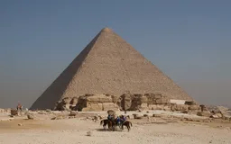
Grande Pyramide de Gizehwiki-fr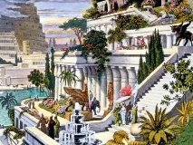
Jardins suspendus de Babylonewiki-fr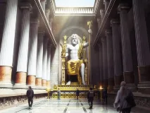
Statue de Zeus à Olympiewiki-fr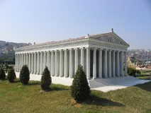
Temple d'Artémis à Éphèsewiki-fr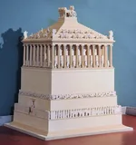
Mausolée d'Halicarnassewiki-fr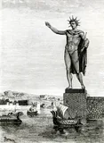
Colosse de Rhodeswiki-fr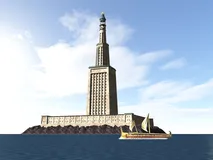
Phare d'Alexandriewiki-fr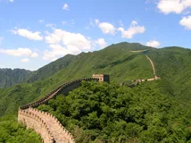
Grande Muraille de Chinewiki-fr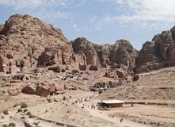
Pétrawiki-fr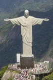
Christ rédempteurwiki-fr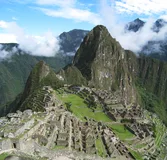
Machu Picchuwiki-fr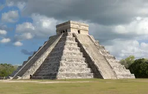
Chichén Itzáwiki-fr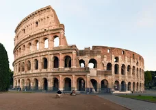
Colisée de Romewiki-fr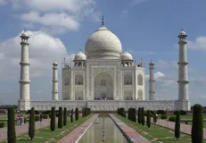
Taj Mahalwiki-fr